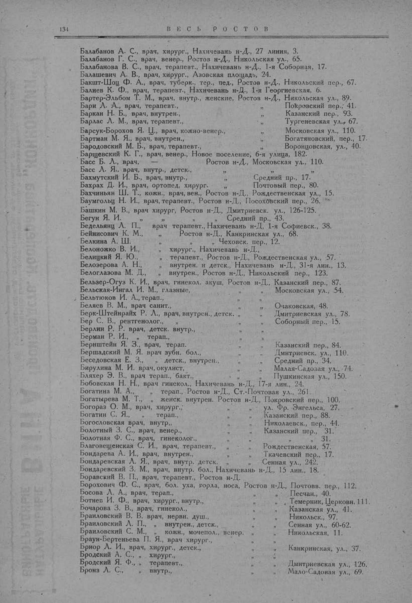

Лист источника 184
Скан

Распознанный текст
134 В Е С Ь Р О С Т О В
Балабанов А. С., врач, хирург., Нахичевань н-Д., 27 линия, 3.
Балабанов Г. С., врач, венер., Ростов н-Д., Никольская ул., 65.
Балабанова В. С., врач, терапевт., Нахичевань н-Д., 1-я Соборная, 17.
Балашевич А. В., врач, хирург., Азовская площадь, 24.
Бакшт-Шоц Ф. А., врач, туберк., тер., пед., Ростов н-Д., Никольский пер., 67.
Балиев К. Ф., врач, терапевт., Нахичевань н-Д., 1-я Георгиевская, 6.
Бартер-Эльбом Т. М., врач, внутр., женские, Ростов н-Д., Никольская ул., 89.
Бари Л. А., врач, терапевт., " Покровский пер., 41.
Баркан Н. Б., врач, внутрен., " Казанский пер., 93.
Барлас Л. М., врач, терапевт., " Тургеневская ул., 67.
Барсук-Борохов Я. Ц., врач, кожно-венер., " Московская ул., 110.
Бартман М. Я., врач, внутрен., " Богатяновский, пер., 17.
Бародовский М. Б., врач, терапевт., " Воронцовская, ул., 40.
Барщевский К. Г., врач, венер., Новое поселение, 6-я улица, 182.
Басс Б. Л., врач, Ростов н-Д., Московская ул., 110.
Басс Л. Я., врач, внутр., детск., " "
Бахмутский И. Б., врач, внутр., " Средний пр., 17.
Бахрах Д. И., врач, ортопед, хирург. " Почтовый пер., 80.
Бахчиньян Ш. Т., кожн., врач, вен., Ростов н-Д., Рождественская ул., 15.
Баумгольц Н. И., врач, терапевт., Ростов н-Д., Посоховский пер., 26.
Башкин М. В., врач хирург, Ростов н-Д., Дмитриевск. ул., 126-125.
Бегун Я. И. " " Средний пр., 43.
Бедельянц Л. П., врач терапевт., Нахичевань н-Д, 1-я Софиевск., 38.
Бейнисович К. М., " Ростов н-Д., Канкринская ул., 68.
Белкина А. Ш. " " Чеховск. пер., 12.
Белоножко В. И., " хирург., Нахичевань н-Д.,
Белицкий Я. Ю., " терапевт., Ростов н-Д., Рождественская ул., 57.
Белозерова А. Н., " внутрен. и детск., Нахичевань н-Д., 31-я лин., 13.
Белоглазова М. Д., " внутрен., Ростов н-Д., Никольский пер., 123.
Бельзер-Огуз К. И., врач, гинекол. акуш, Ростов н-Д., Казанский пер., 87.
Бельская-Ингал И. М., глазные, " Московская ул., 54.
Бельтюков И. А., терап., " "
Беляев В. М., врач санит., " Очаковская, 48.
Берк-Штейнрайх Р. Л., врач, внутрен., детск. " Дмитриевская ул., 78.
Бер С. В., рентгенолог., " Соборный пер., 15.
Берлин Р. Р. врач, детск. внутр., "
Берман Р. И., " терап., "
Бернштейн Я. З., врач, терап. " Казанский пер., 84.
Бершадский М. Я. врач зубн. бол., " Дмитриевск. ул., 110.
Беседовская Е. З., " детск., внутрен., " Средний пр., 34.
Бирулина М. И. врач, окулист, " Малая-Садовая ул., 74.
Бляхер Э. В., врач терап., бакт., " Пушкинская ул., 150.
Бобовская Н. Н., врач гинекол., Нахичевань н-Д., 17-я лин., 24.
Богатина М. А., " терап., Ростов н-Д., Ст.-Почтовая ул., 261.
Богатырева М. Т., " женск. внутрен. Ростов н-Д., Покровский пер., 100.
Богораз О. М., врач, хирург., " ул. Фр. Энгельса, 27.
Богатин С. Я., " терап., " Казанский пер., 88.
Богословская врач, внутр., " Николаевск., пер., 44.
Болотный З. С., врач, венер., " Казанский пер., 31.
Болотная Ф. С., врач, гинеколог., " " 31.
Благовещенская С. И., врач, терапевт., " Рождественская, 57.
Бондарева А. И., врач, внутрен., " Ткачевский пер., 17.
Бондаревская Л. Я., врач, внутр. детск. " Сенная ул., 242.
Бондаревский З. М., врач, внутр. бол., Нахичевань н-Д., 15 лин., 18.
Боравский В. П., врач, терапевт., Ростов н-Д.
Борохович Ф. С., врач, бол. уха, горла, носа, Ростов н-Д., Почтовв. пер., 112.
Босова Л. А., врач, терап., " Песчан., 40.
Ботнев И. Ф., врач, хирург., внутр., " Темерник, Церковн. 111.
Бочарова З. В., врач, гинекол., " Казанская ул., 41.
Браиловский В. В. врач, нервн. душ., " Никольск., 97.
Браиловский Л. П., " внутрен., детск., " Сенная ул., 60-62.
Браиловский С. М., " кожн., мочепол., венер. " Никольская, 11.
Браун-Бертеньева П. Я., врач хирург., "
Бриор Л. И., врач, хирург., детск., " Канкринская, ул., 37.
Бродский А. С., " хирург., "
Бродский Я. Ф., " терапевт., " Дмитриевская ул., 126.
Бронз Л. С., " внутр., " Мало-Садовая ул., 69.